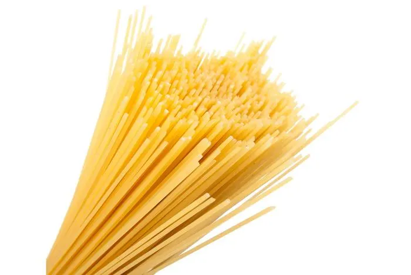
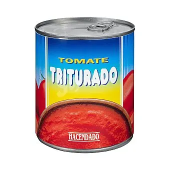
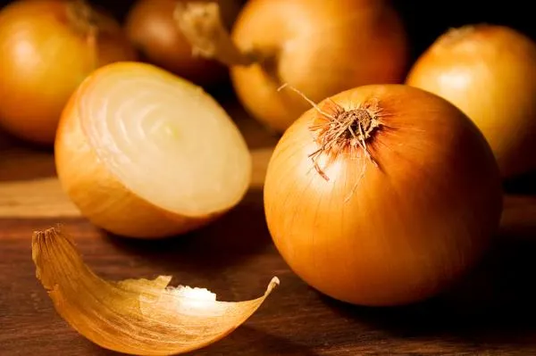
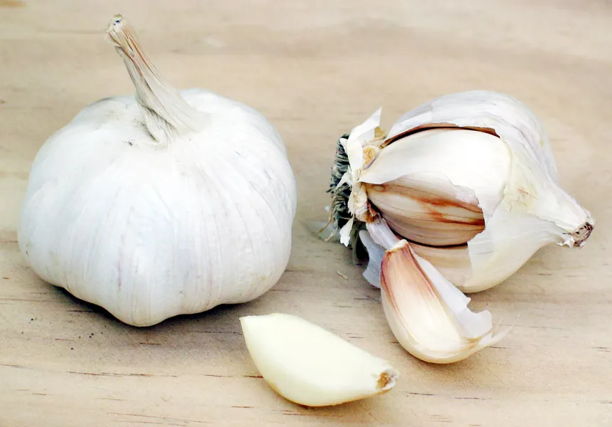
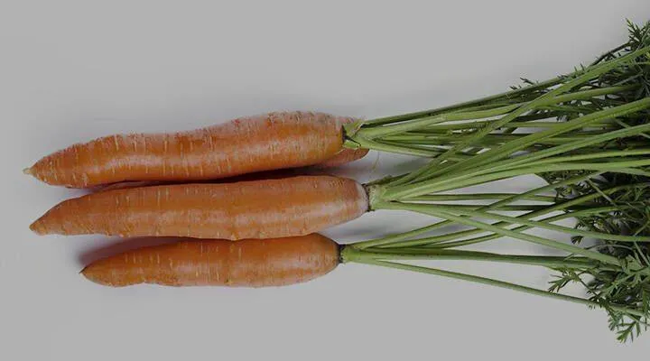
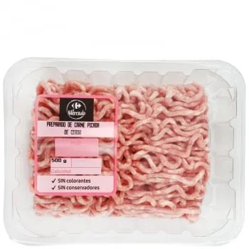
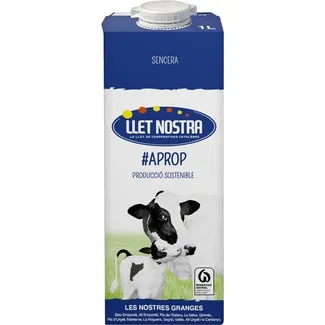
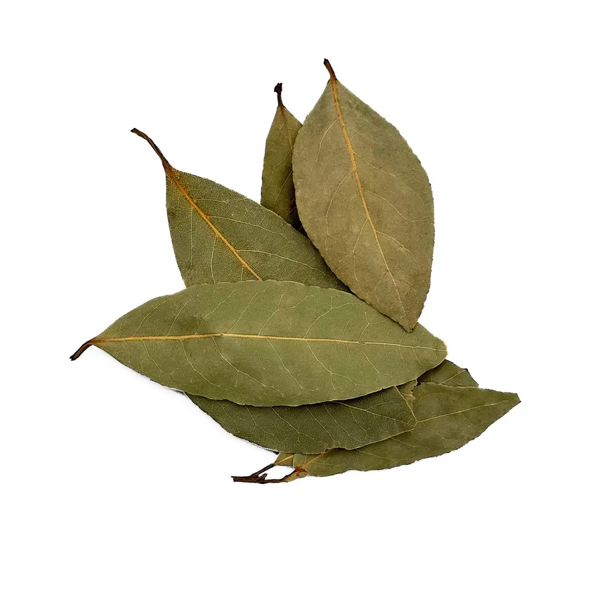
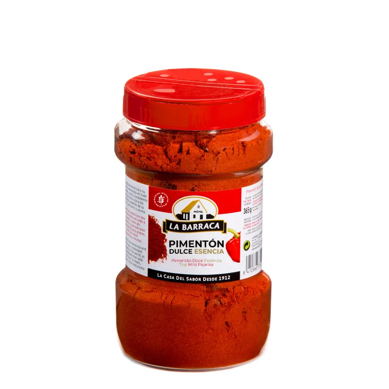
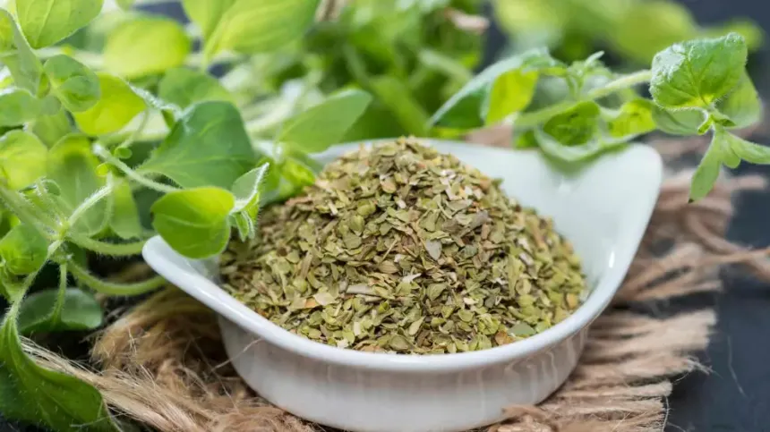

Receta: Espagetis a la bolonyesa
Ingredients:
- Espagetis

- Tomaket triturat

- Ceva

- All

- Pastaganaga

- Carn picada

- Llet

- Llore

- Pimenton dols/pican

- Orenga

Preparacio
- Emplenar una olla i posarla al foc
- Pelar i tallar a trosets la ceva, l'all i la pastanaga
- Posa una paella al foc a potencia mitga amb una mica d'oli
- Una vegada calent es tira la pastanaga
- Cuan la pastanaga estigui una mica feta es posa la ceva i l'all
- Cuan l'aigua bulli posa la pasta i una pisca de sal
- Una vega estigi tot dorat sanyadeich la carn picada
- Amb la carn feta se li anyadeich el tomaquet triturat, un raig de llet, sal al gust, una fulla de llore, una mica de pimenton i d'orenga
- Es deicha la salsa bulli a vaicha potencia, remogentla de tan en tan fins a que tingui la textura desitgada
- Escore la pasta
- Posar la pasta en el plat amb la salsa